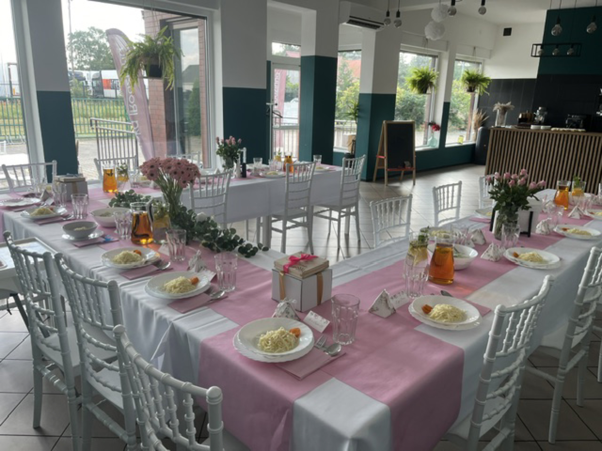
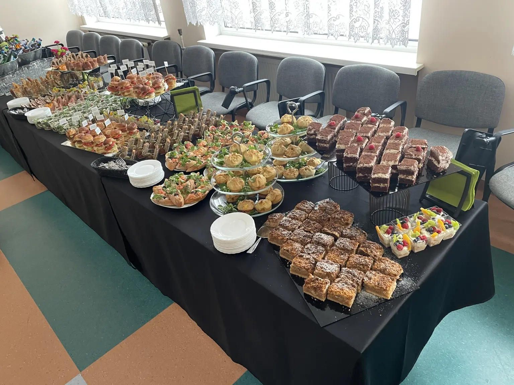
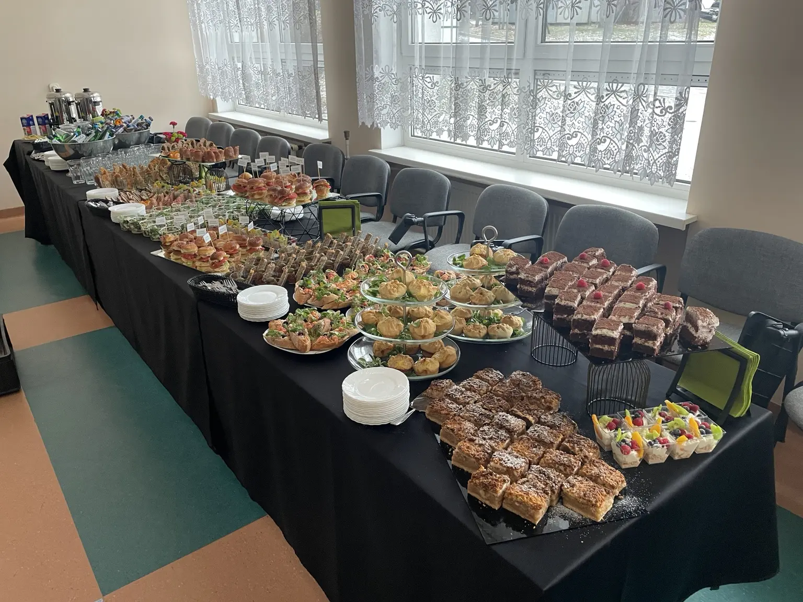
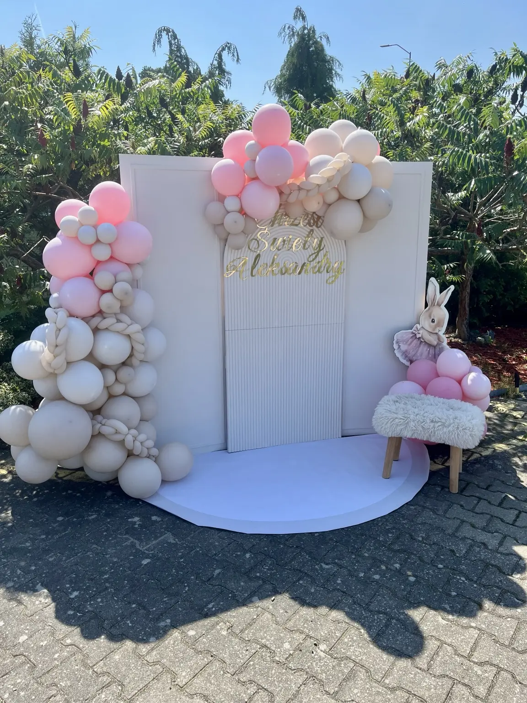

Rodzinne uroczystości
Chrzciny
Ciepłe, spokojne przyjęcia dla najbliższych. Przygotowujemy menu, stół, obsługę i przestrzeń tak, aby rodzice mogli skupić się na rodzinie.

Kameralnie i pięknie
Przyjęcie dopasowane do Was
Możemy przygotować uroczystość w Knajpce albo dostarczyć catering pod wskazany adres.
✓
Menu dla dorosłych i dzieci
Dania ciepłe, przekąski, desery oraz napoje.
✓
Estetyczna oprawa
Nakrycie stołów, bufet i wygodne ustawienie sali.
✓
Sprawna obsługa
Dbamy o przebieg przyjęcia od powitania do ostatniego dania.


Własne realizacje
Smak i oprawa w jednym miejscu


Zorganizujmy piękne chrzciny
Powiedz nam, ilu będzie gości i jaki charakter ma mieć przyjęcie.